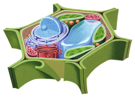
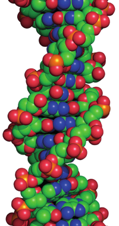
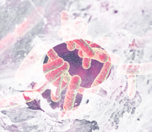

Busca el significado etimológico de los términos eucariota y procariota.
Cuando un niño crece y se convierte en adulto, ¿aumenta el tamaño de sus células o el número de ellas? ¿Por qué?
¿Qué tipo de célula representa la siguiente imagen? Argumenta tu respuesta.
Existen células cuyo material genético está disperso en el citoplasma y otras en las que ese material está rodeado por una membrana. ¿A qué tipo de células corresponde cada descripción?
Busca imágenes sobre las distintas formas que pueden presentar las células procariotas y eucariotas. Dibuja y rotula en tu cuaderno de cada tipo. Indica las fuentes consultadas.
Con la sigla ADN se designa una sustancia fundamental en los seres vivos. Busca su significado y explica el porqué de su importancia.
Copia y relaciona en tu cuaderno ambas columnas.
Material genético encerrado en un núcleo
Membrana celular
Pared celular
Célula eucariota
Sí
Varía
Célula procariota
No
Sí
Célula animal
Sí
No
Célula vegetal
Sí
Sí
Indica dos seres que tengan células procariotas y dos que posean células eucariotas.
Expón todo lo que sepas sobre los dos tipos de organismos presentados en las imágenes.
¿Qué es la taxonomía? Busca su significado etimológico.
Ordena de menor a mayor, según el número de organismos distintos que contiene cada categoría taxonómica: familia, clase, filo, orden, género, especie y reino.
Carlos Linnaeus fue quien propuso el empleo de dos términos para nombrar a las especies, sistema de clasificación denominado nomenclatura binomial. Explica con ejemplos en qué consiste y qué se pretende con él.
Busca y escribe los taxones principales a los que pertenece el gato doméstico (Felis catus), desde el reino hasta la especie.
Investiga y completa la clasificación del ser humano con la categoría del taxón que corresponda. Cita las fuentes consultadas.
Reino:
Filo:
Subfilo:
Orden:
Género:
Especie:
¿Incluirías en el mismo taxón a un delfín y a un tiburón? Explica tu respuesta.

Diagrama de célula vegetal

Estructura molecular del ADN

Células bacterianas